ゲーム概要
「迷境の旅人」は、ターン制のローグライクダンジョンRPGです。 プレイヤーが1歩動くと、敵も1歩動く。じっくり考えて行動できるのが特徴です。
目標は、全20階からなるダンジョン「霧幻の塔」を踏破すること。 フロアごとに自動生成されるダンジョンを探索し、モンスターと戦い、 アイテムを活用して最深部を目指しましょう。
注意：倒れたら全てを失い、レベル1からやり直しになります。 慎重な判断と、時には撤退する勇気が大切です。
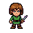
あなたの分身基本操作
移動（8方向）
行動キー
画面の見方
マップタイル
ダンジョンは以下のタイルで構成されています。
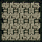
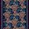
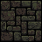
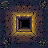
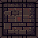
キャラクター
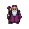
モンスター（一部）
ダンジョンには多くのモンスターが潜んでいます。深い階層ほど強敵が出現します。
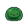
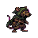
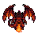
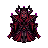
アイテムの種類
ダンジョン内では様々なアイテムが手に入ります。上手に活用して生き残りましょう。
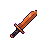
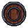
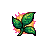
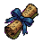
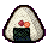
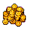
草・巻物などは最初「未識別」の状態です。使ってみるまで正体がわかりません。 識別の巻物を使うか、実際に使用して効果を確かめましょう。
戦闘のコツ
サバイバルのヒント
初心者が生き残るための大切なポイントをまとめました。
-
食料は命綱
おにぎりを見つけたら必ず確保しましょう。満腹度がゼロになると、じわじわとHPが削られて詰みます。 -
拾った装備はすぐ装備
今持っている武器・盾より強いものを見つけたら、迷わず装備を切り替えましょう。攻撃力と防御力はダンジョン攻略の基本です。 -
全ての敵と戦う必要はない
HPが少ない時や強敵が相手の時は、逃げるのも立派な戦略です。 階段を見つけたら、無理に探索を続けず次のフロアに進むことも検討しましょう。 -
草と巻物は慎重に使う
未識別のアイテムは、安全な状況で試しましょう。いざという時のために強力なアイテムは温存するのも手です。 -
階段は保険
フロアの階段の位置を見つけたら覚えておきましょう。ピンチの時にすぐ逃げ込めます。 ただし、レベル上げが不十分なまま先に進むと後で苦労します。 -
通路の罠に気をつけろ
通路には見えない罠が隠れていることがあります。毒矢、落とし穴、地雷など、 踏むと厄介なものばかりです。足元を調べる習慣をつけましょう。
死んで覚えるのがローグライクの醍醐味です。 失敗を恐れず、何度でも挑戦しましょう！